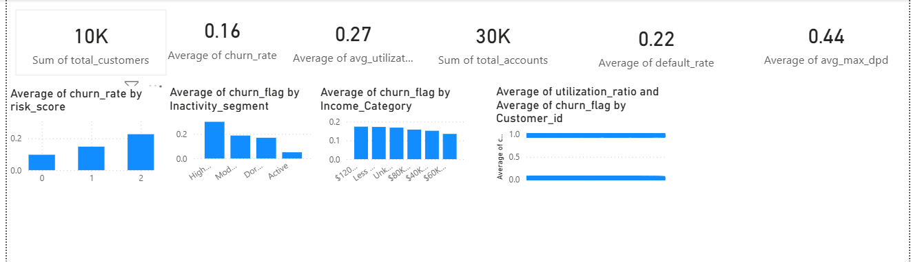
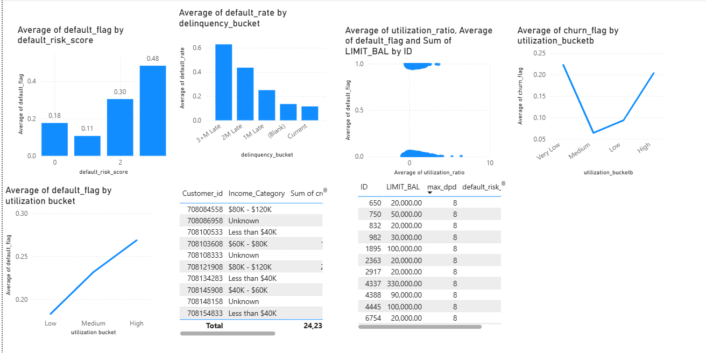

Credit Card Churn & Delinquency

Project Overview
This project focuses on analyzing customer behavior to identify churn risk and credit default risk in a credit card portfolio.
The objective is to build an end-to-end analytics pipeline to support portfolio monitoring and business decision-making.
Business Problem
Why are customers:
- Reducing spend?
- Becoming inactive?
- Defaulting on payments?
The project answers these questions using behavioral and financial data.
Technology Used
Python
Pandas
Numpy
Matplotlib
Scikit-learn
Seaborn
SQL
Power BI
Tableau
Excel
Project Workflow
- Data generation & Collection
- Data Cleaning
- EDA
- Feature Engineering
- SQL Data Modeling & KPI Views
- Risk Segmentation (Churn & Default)
- Predictive Modeling (Logistic Regression)
- Dashboard Development (Tableau & Power BI)
Business KPIs
- Total Customers
- Average Churn Rate
- Average Utilization Ratio
- Total Accounts
- Average default rate
- Average max dpd
- Average of churn rate by risk score
- Average churn flag by inactivity segment
- Average churn flag by income category
- Average default flag by default risk score
- Average default rate by delinquency bucket
Dashboard Preview
